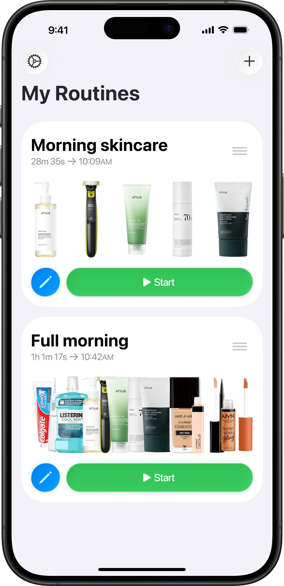
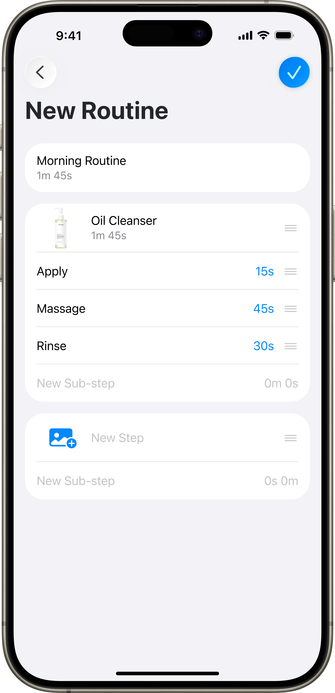
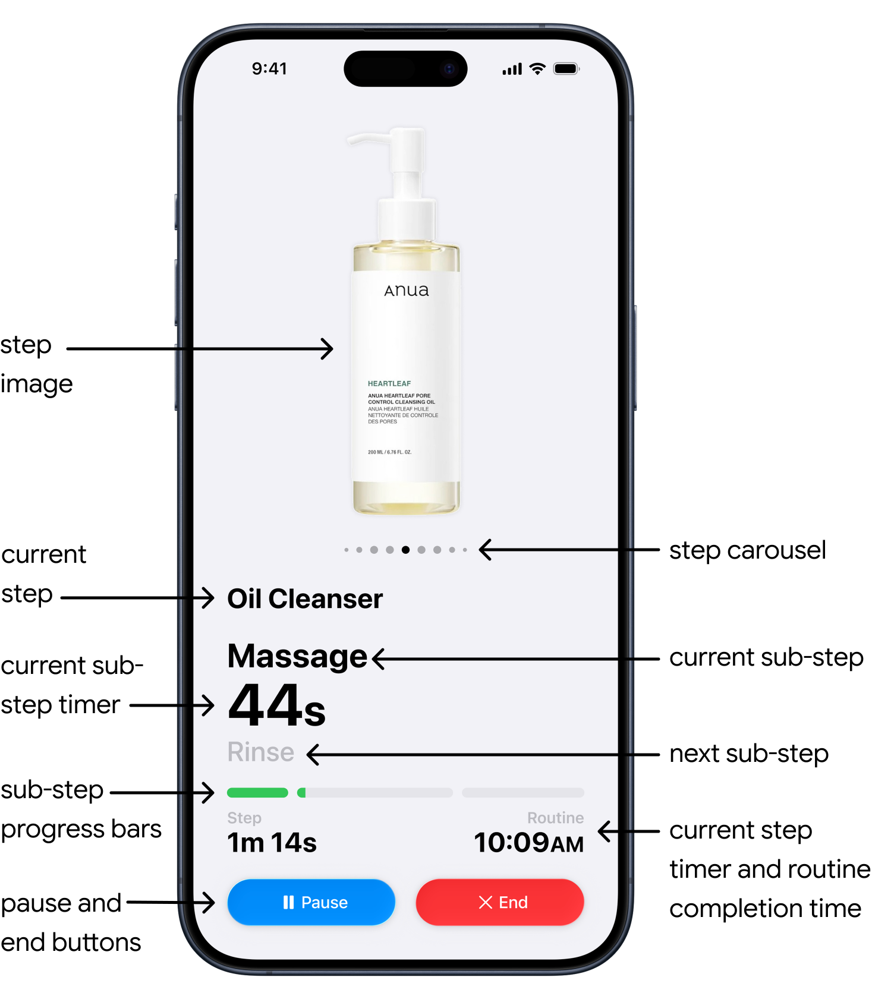
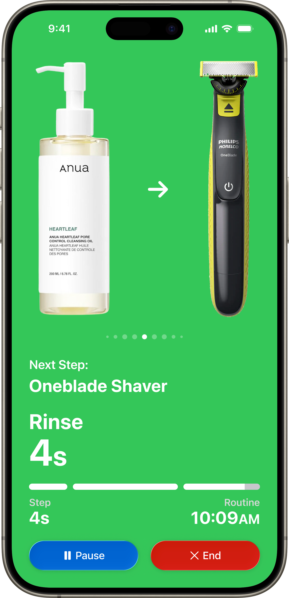
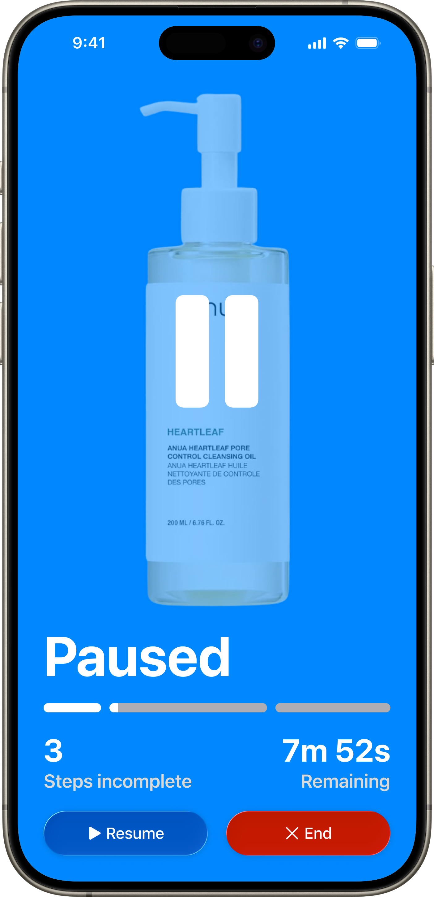
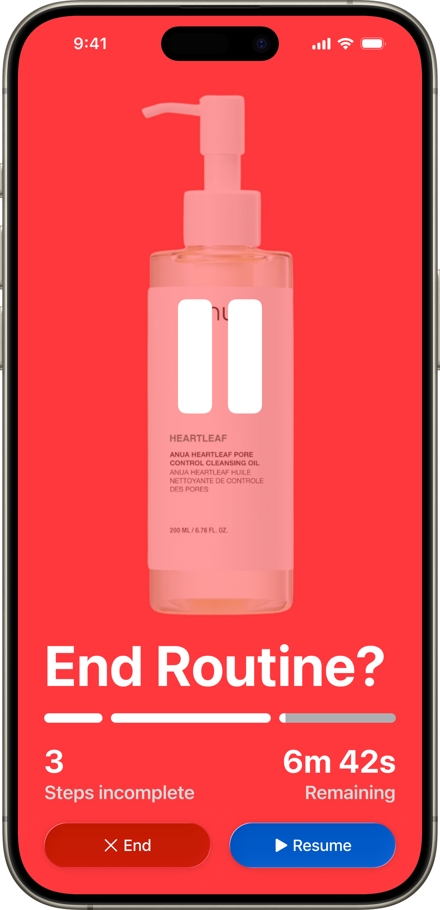
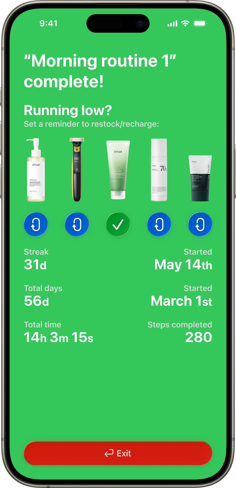

Problem:
Solution:
Many people's daily routines involve dozens of products across skin-care, hair-care, and makeup. Some don't have a routine like these and want to get into one, but find the complex routines recommended online too complicated. With so many steps for someone to remember, these routines can be overwhelming. Without a way to manage the time you spend on each step, your routine can be overly time consuming. And when a routine is overwhelming and time consuming, it ends up being difficult to stick to.
Routinely is a native iOS app I designed that uses hierarchy and visual feedback in your periphery to make those complex personal care routines easier to follow. Routinely was designed to guide you step by step (and even sub-step by sub-step) with timers through your morning routine. This guidance takes away the stress of remembering steps, helping you to be more time efficient. And Routinely encourages consistency through streaks and positive reinforcement, gamifying the routine experience.
My routines and new routine screens:


Here is your list of existing routines aka the home screen for the app, and here is the screen to create a new routine. Let's say you would like to create a morning skincare routine; you simply press the plus button to create your routine, and then give it a name like "morning skincare". Next for your first step you can add an image of your product, and then name it, something like "facial cleanser". Then you can add sub-steps like "apply" "massage" and "rinse" and input how much time you would like to allocate for each.
Routine screen:

This is where you would spend most of your time while using the app. The primary element is the image of the product you added for this step. With your phone propped up in your bathroom, an image reads instantly in a way that a text label doesn't. The app uses consistent type sizes regardless of screen size, ranging from 16pt for the step completion time label to 60pt for the step timer. Below it is the step carousel, the current step and sub-step, a timer for your current sub-step — the largest text in the interface — sub-step progress bars, and routine completion time. Finally at the bottom are the pause and end routine buttons.
Step finished and routine paused screens:


This is the screen you see when you finish a step, and also the screen you see when you press the pause button. When these appear, the background color for the screen changes. The purpose of this is for the change to be visible even from your peripheral vision, inspired by Apple's spatial interaction design. When you complete a step, the screen turns green. The routine paused screen is blue so that if you accidentally press the pause button, you will know your routine is paused.
End routine and routine finished screens:


The end routine screen is a confirmation screen with a red background so the user can recognize their mistake from their periphery. The button placements switch since you are more likely to accidentally press that spot twice. The routine finished screen is green to let you know the routine is complete. From here you can set reminders to restock products and view your streak, total days, and time spent.
Conclusion:
Routinely is my elegant iOS native solution to wanting to commit to a long personal care routine, but being unable to handle the complexity. All screens were designed using Figma Auto Layout, allowing them to be easily adapted to any screen size with little work, as you can see above.